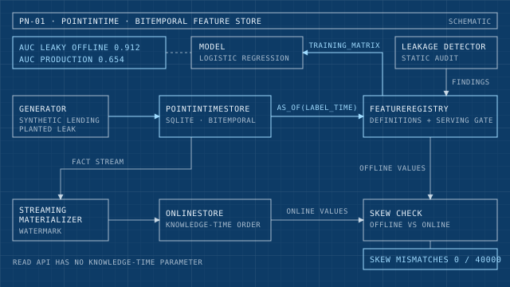

Sheet 01 · ML infrastructure
pointintime
A bitemporal feature store in which point-in-time correctness is enforced by the read API. A static leakage detector quarantines a deliberately planted future-leaking feature, and a train/serve skew check compares offline and online values.
Results
- A naive latest-value join scores 0.912 AUC offline against 0.654 on production inputs; honest point-in-time features score 0.701
- Knowledge-time watermark gives 0 of 40000 skew mismatches versus 3492 mismatches at 8.73% for the event-time bug
- 59 tests covering the store, detector, registry gate and materializer